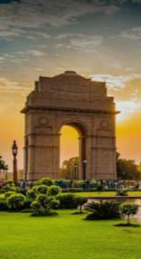
India Gate
War memorial built in memory of Indian soldiers. Best visited in the evening.
Click a button to see only that type of place.

War memorial built in memory of Indian soldiers. Best visited in the evening.
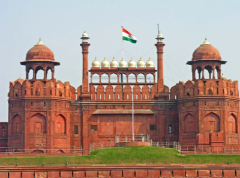
Huge red sandstone Mughal fort in Old Delhi. A UNESCO World Heritage Site.

A 73 metre tall minaret in Mehrauli, built in the 12th century.
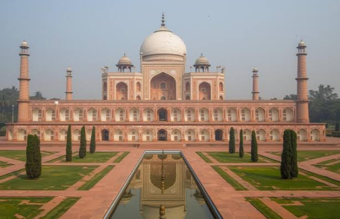
Beautiful garden tomb of the Mughal emperor Humayun.
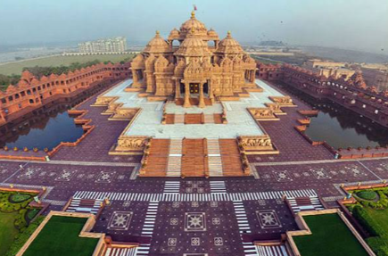
A grand temple known for its carvings, exhibitions and evening water show.
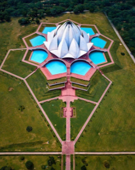
A peaceful Bahai temple shaped like a lotus flower. Open to all.
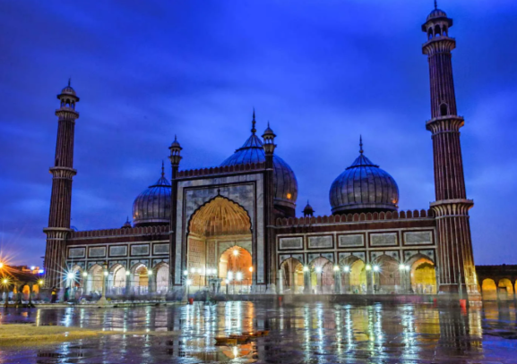
One of the largest mosques in India, near Red Fort.
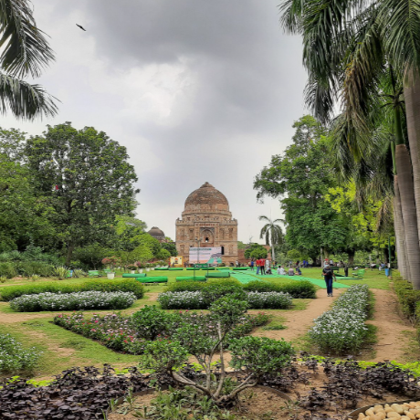
A calm park with old tombs, perfect for a morning walk.
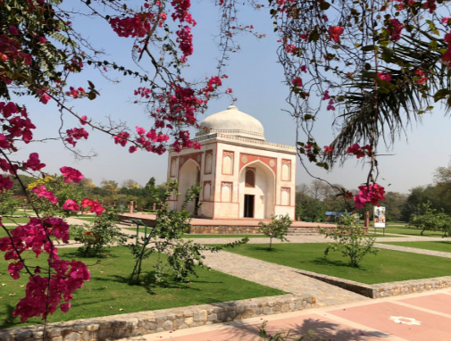
A heritage park with gardens, trees and monuments near Humayun's Tomb.
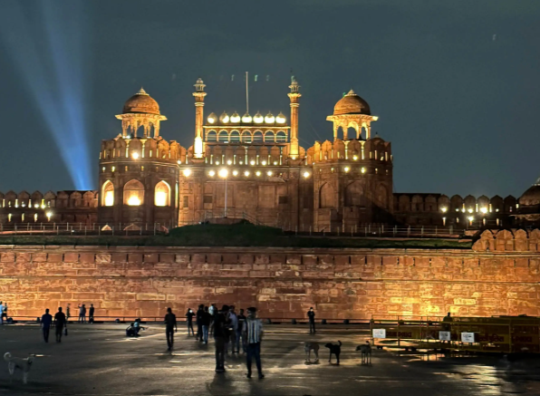
Busy old market famous for street food, sweets and cloth shops.
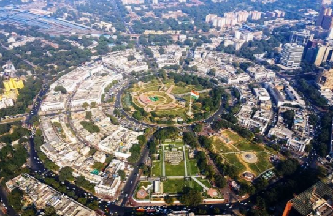
Central Delhi's circular market with cafes, restaurants and shops.
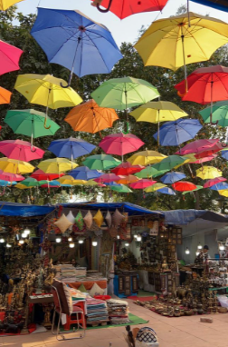
Open-air craft bazaar with handicrafts and food stalls from many states.